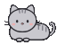

On the map
Pet food
Vet, spay and neuter
Adopt
Zuzu's shelter
Pins marked "from an official list" come from county and state lists. I'll confirm each one directly starting December 2026. Until then, call before you go.
Near you
Programs across New Jersey
Zuzu's tip: call ahead. Lots of pantries only hand out pet food on certain days.
Who's behind this?
Hi! I'm Cindy, a grad student at Rutgers, and Zuzu is my very chatty shelter cat. Paws & Pantries is my solo project to make pet help in New Jersey easier to find.

Did this help you today?
Thank you! This tells us whether the site is working.